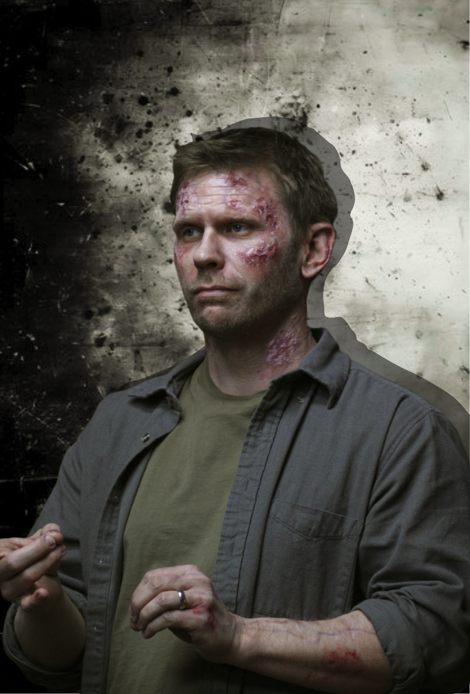

Dean Winchester
Dean Winchester é um dos protagonistas de Supernatural, conhecido por seu espírito guerreiro e lealdade inabalável à família. O filho mais velho de John e Mary Winchester, Dean foi criado para ser um caçador, protegendo pessoas de criaturas sobrenaturais.
Ele é carismático, sarcástico e um amante do rock clássico, com uma ligação especial com seu Chevrolet Impala 1967, apelidado de "Baby". Apesar de seu exterior durão, Dean é profundamente protetor, especialmente com seu irmão, Sam, e carrega o peso das perdas e sacrifícios que enfrentou ao longo de sua vida.
Mais do que um caçador, Dean é um herói que faz o que for necessário para salvar aqueles que ama, mesmo que isso signifique colocar sua própria vida em risco.
Sam Winchester
Sam Winchester é o irmão mais novo de Dean e um dos protagonistas de Supernatural. Mais introspectivo e idealista, Sam inicialmente tenta fugir da vida de caçador, buscando uma vida normal e acadêmica. No entanto, eventos trágicos o puxam de volta ao mundo sobrenatural.
Sam é inteligente, estratégico e movido por um forte senso de justiça, sempre tentando encontrar alternativas que minimizem o sofrimento. Ele possui uma relação complexa com seu destino, enfrentando lutas internas por causa de conexões com forças sombrias, mas nunca desiste de lutar pelo bem.
Embora seja mais reservado que Dean, Sam é igualmente leal à família e à missão de proteger inocentes, sendo a mente analítica que complementa a força de seu irmão.
Castiel

Castiel é um anjo do Senhor e um dos personagens mais icônicos de Supernatural. Inicialmente enviado à Terra como um soldado obediente do Céu, Castiel resgata Dean Winchester do Inferno, marcando o início de uma jornada que desafia sua fé e lealdade.
Com o tempo, Castiel desenvolve uma profunda amizade com os irmãos Winchester, aprendendo o valor da humanidade e questionando as ordens divinas. Ele é poderoso, sério e, às vezes, ingênuo, mas possui um coração puro e uma determinação inabalável em proteger aqueles que ama.
Sua presença é marcada por frases diretas, humor involuntário e sacrifícios constantes, tornando-o uma figura indispensável na batalha entre o bem e o mal.
Bobby Singer

Bobby Singer é um caçador veterano e uma figura paterna para Sam e Dean Winchester em Supernatural. Dono de um vasto conhecimento sobre o sobrenatural, ele é frequentemente a primeira ligação dos irmãos quando precisam de informações, estratégias ou até mesmo um lugar seguro.
Bobby é prático, inteligente e extremamente leal, sempre disposto a ajudar, mesmo quando os riscos são altos. Seu sarcasmo afiado e sua abordagem direta escondem um coração generoso e um profundo afeto pelos Winchester, a quem considera como filhos.
Embora tenha sofrido perdas dolorosas, Bobby continua lutando, sendo um exemplo de resiliência e determinação no mundo caótico dos caçadores. Seu lema, "idjits", tornou-se uma marca registrada cheia de carinho.
Crowley
Crowley, também conhecido como o Rei do Inferno, é um dos personagens mais carismáticos e astutos de Supernatural. Originalmente um cruzamentador demoníaco, ele ascende ao trono do Inferno graças à sua inteligência estratégica e habilidades manipuladoras.
Com um humor sarcástico e uma predileção por alianças imprevisíveis, Crowley frequentemente colabora com os irmãos Winchester, embora seus motivos geralmente sejam egoístas. Ele é charmoso, implacável e surpreendentemente complexo, mostrando momentos de vulnerabilidade e até lealdade.
Crowley é um mestre do jogo político no Inferno, mas sua relação com Sam, Dean e até Castiel demonstra que, apesar de ser um demônio, ele possui camadas que vão além de sua natureza maléfica.
Lúcifer
Lúcifer, também conhecido como o Portador da Luz, é o principal antagonista de várias temporadas de Supernatural. Como o primeiro arcanjo a se rebelar contra Deus, ele foi banido para a Gaiola no Inferno, onde passou milênios alimentando seu ódio pela humanidade e pelo Céu.
Astuto, carismático e cruel, Lúcifer possui uma visão distorcida de justiça e acredita que foi injustiçado por seu Pai. Embora seja imensamente poderoso, sua vaidade e necessidade de aprovação frequentemente o tornam vulnerável.
Apesar de ser o grande arquiteto de caos e destruição, ele também apresenta traços de humor sarcástico e manipulação calculada, tornando-o uma figura tanto aterrorizante quanto fascinante no mundo sobrenatural dos Winchester.